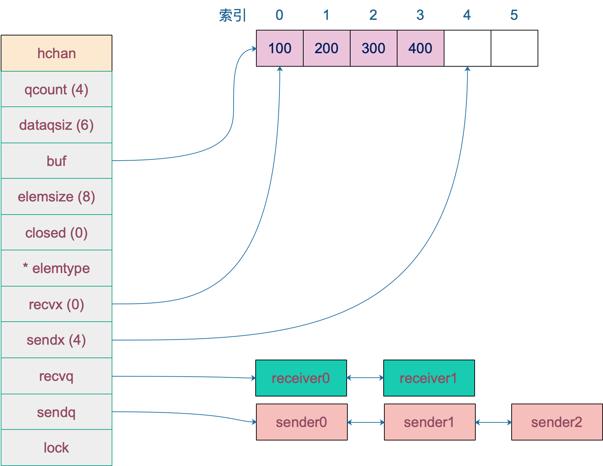
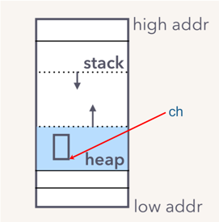

数据结构
#
底层数据结构需要看源码，版本为 go 1.9.2：
1
2
3
4
5
6
7
8
9
10
11
12
13
14
15
16
17
18
19
20
21
22
23
24
25
26
|
type hchan struct {
// chan 里元素数量
qcount uint
// chan 底层循环数组的长度
dataqsiz uint
// 指向底层循环数组的指针
// 只针对有缓冲的 channel
buf unsafe.Pointer
// chan 中元素大小
elemsize uint16
// chan 是否被关闭的标志
closed uint32
// chan 中元素类型
elemtype *_type // element type
// 已发送元素在循环数组中的索引
sendx uint // send index
// 已接收元素在循环数组中的索引
recvx uint // receive index
// 等待接收的 goroutine 队列
recvq waitq // list of recv waiters
// 等待发送的 goroutine 队列
sendq waitq // list of send waiters
// 保护 hchan 中所有字段
lock mutex
}
|
关于字段的含义都写在注释里了，再来重点说几个字段：
buf 指向底层循环数组，只有缓冲型的 channel 才有。
sendx，recvx 均指向底层循环数组，表示当前可以发送和接收的元素位置索引值（相对于底层数组）。
sendq，recvq 分别表示被阻塞的 goroutine，这些 goroutine 由于尝试读取 channel 或向 channel 发送数据而被阻塞。
waitq 是 sudog 的一个双向链表，而 sudog 实际上是对 goroutine 的一个封装：
1
2
3
4
|
type waitq struct {
first *sudog
last *sudog
}
|
lock 用来保证每个读 channel 或写 channel 的操作都是原子的。
例如，创建一个容量为 6 的，元素为 int 型的 channel 数据结构如下 ：

创建
#
我们知道，通道有两个方向，发送和接收。理论上来说，我们可以创建一个只发送或只接收的通道，但是这种通道创建出来后，怎么使用呢？一个只能发的通道，怎么接收呢？同样，一个只能收的通道，如何向其发送数据呢？
一般而言，使用 make 创建一个能收能发的通道：
1
2
3
4
|
// 无缓冲通道
ch1 := make(chan int)
// 有缓冲通道
ch2 := make(chan int, 10)
|
通过汇编分析，我们知道，最终创建 chan 的函数是 makechan：
1
|
func makechan(t *chantype, size int64) *hchan
|
从函数原型来看，创建的 chan 是一个指针。所以我们能在函数间直接传递 channel，而不用传递 channel 的指针。
具体来看下代码：
1
2
3
4
5
6
7
8
9
10
11
12
13
14
15
16
17
18
19
20
21
22
23
24
25
26
27
28
29
30
31
32
33
34
35
36
37
38
39
|
const hchanSize = unsafe.Sizeof(hchan{}) + uintptr(-int(unsafe.Sizeof(hchan{}))&(maxAlign-1))
func makechan(t *chantype, size int64) *hchan {
elem := t.elem
// 省略了检查 channel size，align 的代码
// ……
var c *hchan
// 如果元素类型不含指针 或者 size 大小为 0（无缓冲类型）
// 只进行一次内存分配
if elem.kind&kindNoPointers != 0 || size == 0 {
// 如果 hchan 结构体中不含指针，GC 就不会扫描 chan 中的元素
// 只分配 "hchan 结构体大小 + 元素大小*个数" 的内存
c = (*hchan)(mallocgc(hchanSize+uintptr(size)*elem.size, nil, true))
// 如果是缓冲型 channel 且元素大小不等于 0（大小等于 0的元素类型：struct{}）
if size > 0 && elem.size != 0 {
c.buf = add(unsafe.Pointer(c), hchanSize)
} else {
// race detector uses this location for synchronization
// Also prevents us from pointing beyond the allocation (see issue 9401).
// 1. 非缓冲型的，buf 没用，直接指向 chan 起始地址处
// 2. 缓冲型的，能进入到这里，说明元素无指针且元素类型为 struct{}，也无影响
// 因为只会用到接收和发送游标，不会真正拷贝东西到 c.buf 处（这会覆盖 chan的内容）
c.buf = unsafe.Pointer(c)
}
} else {
// 进行两次内存分配操作
c = new(hchan)
c.buf = newarray(elem, int(size))
}
c.elemsize = uint16(elem.size)
c.elemtype = elem
// 循环数组长度
c.dataqsiz = uint(size)
// 返回 hchan 指针
return c
}
|
新建一个 chan 后，内存在堆上分配，大概长这样：

参考资料
#
【Kavya在Gopher Con 上关于 channel 的设计，非常好】https://speakerd.s3.amazonaws.com/presentations/10ac0b1d76a6463aa98ad6a9dec917a7/GopherCon_v10.0.pdf